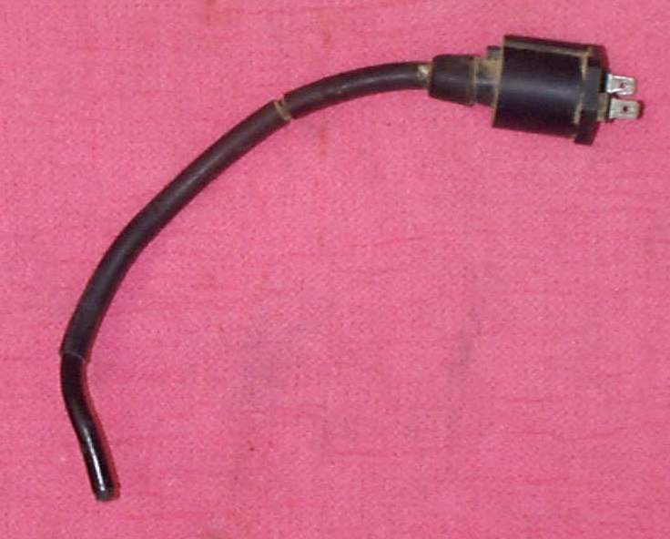
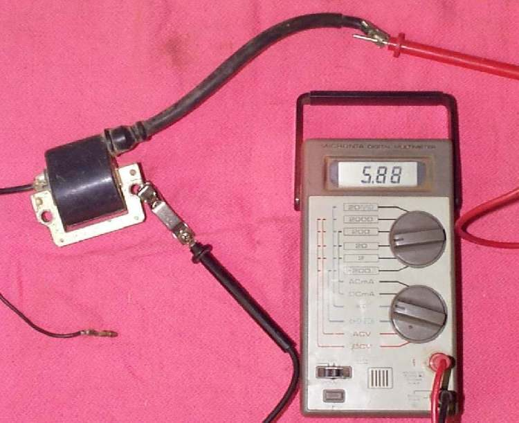
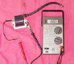
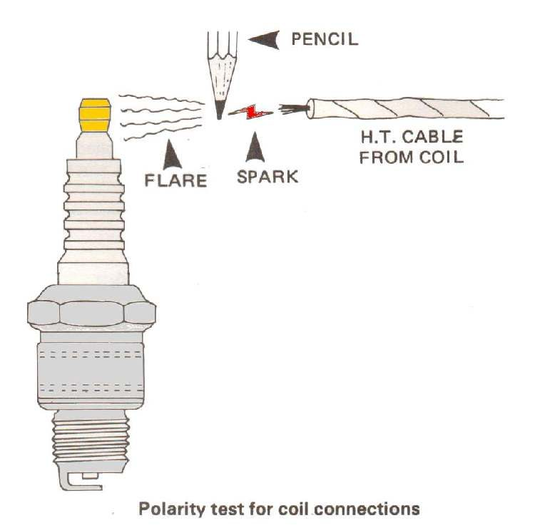

Home mechanic (basic tools) · Time: 30 to 60 min (fuel tank may need removing) (estimate)
The ignition coil turns a low voltage pulse into the very high voltage that jumps the plug gap. The plug cap connects the coil lead to the plug and often contains a resistor. A cracked cap, a corroded lead end or a failing coil gives a weak or missing spark, often worse in wet weather or when hot.
Safety
- Key OFF and battery negative disconnected when you unplug the coil.
- Do not touch the plug lead while the engine is cranking or running.
- K-Light 125: the fuel tank must come off to reach the coil (PDF page 88). Drain or support the tank, keep fuel away from sparks, and plug the fuel line. Fuel-injected tanks hold pressure in the line: see your manual before disconnecting it.
You need
- A multimeter on ohms.
- The wiring diagram. K-Light 125: the coil primary has two wires, black/red (power) and black/white (switched to earth by the ECU) (PDF page 83).
Steps
- Look first. Check the cap and lead for cracks, burn tracks, green corrosion and water inside the cap. Check that the lead is firmly in the coil. Check that the coil body is not cracked and that its mounting is tight; the coil often earths through its mount.
- Small wires. Check the two primary wire connectors are clean and tight. The K-Light 125 manual says most ignition faults are poor connectors (PDF page 85).
- Plug cap. Unscrew the cap from the lead if it is the screw-on type. Measure across the cap from the plug end to the lead end. A reading that jumps about or reads open means a bad cap: replace it. Use the cap resistance in your manual if it gives one.
- Primary winding. Unplug the small wires. Measure across the two primary terminals. You should get a low resistance reading. An open reading (infinity) means a broken winding: the coil is faulty (K-Light 125 manual). The K-Light 125 manual gives two different tolerances for this value, so this page does not give a pass or fail number. Use your coil maker's exact value.
- Secondary winding. Measure from the plug lead end (cap removed) to one primary terminal or to earth, as your manual describes. Open means a broken winding.
- Swap test. The best simple test is to fit a known good coil from the same model and see whether the spark returns. The K-Light 125 fuel injection troubleshooting uses this method (PDF page 275).
- Hot fault. A coil can pass every resistance test cold and still fail when hot or under load. If the fault comes when the engine is hot, test for a spark straight after it cuts out: Check for a spark safely.
- Refit. Clean the connectors, add a little dielectric grease, refit the coil firmly to clean metal, push the cap on until it clicks. The K-Light 125 manual gives different torque values for the coil mounting on different pages, so tighten firmly and use your manual's confirmed value.
Check your work
- A strong spark on the tester, and the engine starts and revs cleanly.
- The cap seals well on the plug.
If it did not fix the problem
- Coil and cap good, still no spark: Test the ignition pick-up, then Diagnose a suspected CDI or ECU fault.
- No power reaches the coil with the key ON: Test the engine stop switch.